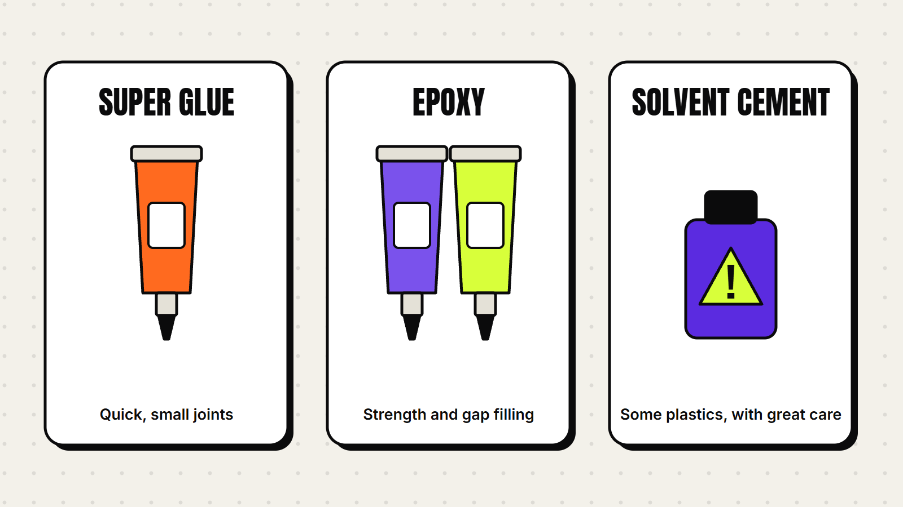
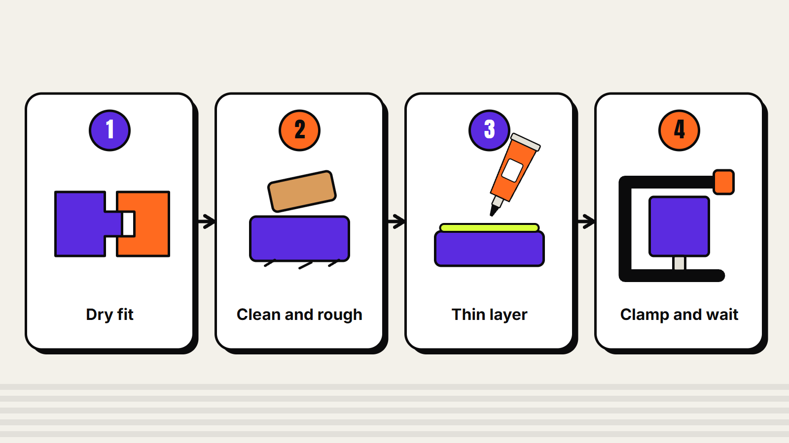

Large models are often printed in pieces, and even good prints can break. The right glue and a careful method make a joint strong and neat. This guide covers common adhesives, how to prepare surfaces, and when a repair is not safe to rely on.

| Adhesive | Good for | Notes |
|---|---|---|
| Cyanoacrylate (super glue) | Quick joints on PLA, PETG, ABS | Gel type fills small gaps; brittle on flexing parts |
| Two-part epoxy | Strong joints and gaps | Mix well and allow full curing |
| Solvent cement | Certain plastics, such as ABS | Hazardous fumes; follow instructions exactly |
| Contact or flexible adhesive | Parts that bend slightly | Check it suits the plastic |
Acetone welds ABS but has little effect on PLA. Expanding foam glues can push joints apart. Test on a scrap first, and read the maker's safety sheet.

Pins, keys, and overlapping steps increase the glued area and keep parts aligned. A flat butt joint across a thin section is the weakest option. See joints and fixings.
Do not rely on a glued repair for anything carrying weight above people, for safety or electrical parts, or where heat will reach the joint. Reprint it with a better design and material. Our measuring guide helps you order a replacement.
Fill the line with a suitable filler, sand with fine paper, prime, and paint. See finishing and painting.
Tip: Glue one joint at a time on multi-part models. Alignment errors grow when everything moves at once.
A tube of gel super glue, a two-part epoxy, fine sandpaper, masking tape, a few cocktail sticks for applying glue, and spare gloves cover most small jobs. Check dates on adhesives, because old glue cures poorly. Store them capped, cool, and out of children's reach. When a repair matters, practise on two scrap pieces of the same material first, let them cure, and try to break them apart. That shows how strong your method really is before you use it on something you care about, and it shows how much cure time the joint truly needs.
Dispose of empty tubes and mixed epoxy according to local rules, and let leftover mixed adhesive harden fully before throwing it away.
Gel super glue suits most small repairs. Epoxy is the better choice for larger joints or gaps. Test both on scraps if strength matters.
Common causes are dirty surfaces, too little contact area, loading before full cure, or a part that was too thin where it broke. A pin or a redesigned section may be needed.
Often, with an adhesive rated for both surfaces. Roughen smooth faces and test a sample, especially with metal, glass, or rubber.
Follow the glue maker's safety sheet. Do not pull bonded skin apart, and seek medical help for anything near the eyes or mouth. Solvents that remove glue can also damage plastic.
A thin, well-aligned joint can be subtle. Filling, light sanding, and paint hide it further, though a perfect match with raw filament is hard to achieve.
Some people join parts with a soldering iron or a printing pen. It needs ventilation and practice, can distort the shape, and should never be done on parts carrying safety loads.
Note the plastic, the adhesive, how you prepared the surfaces, and how long you waited. If the joint holds for months, you have a method to trust next time. If it fails, the note shows what to change, such as a rougher surface, a longer cure, an added pin, or a different adhesive altogether.
If a printed part keeps failing at the same point, send photos through the quote form. A small design change may solve it for good.